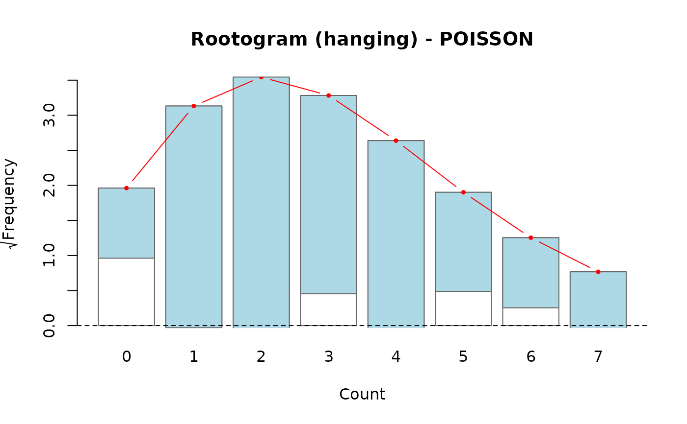
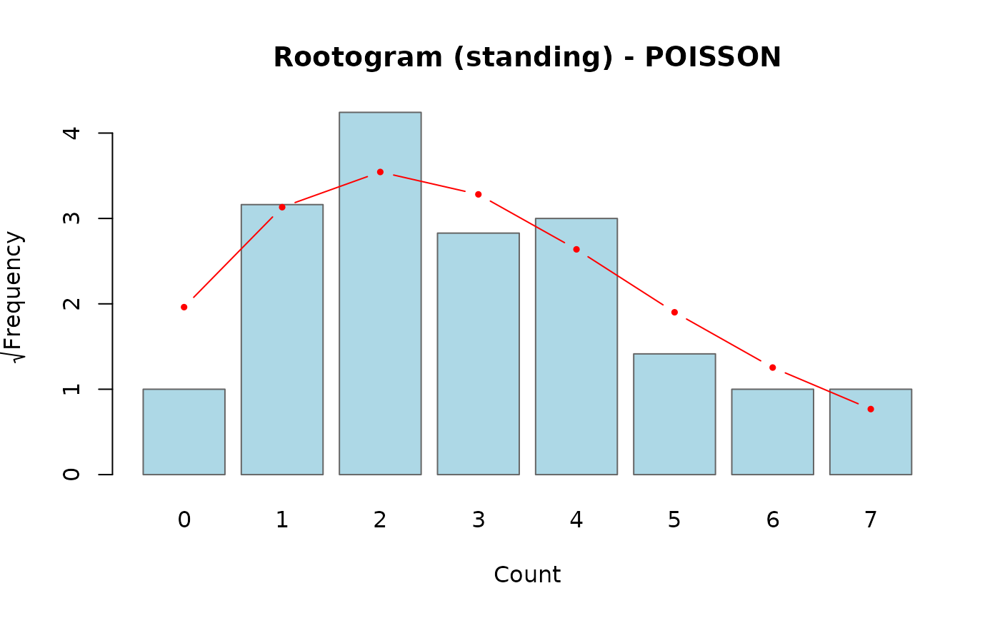
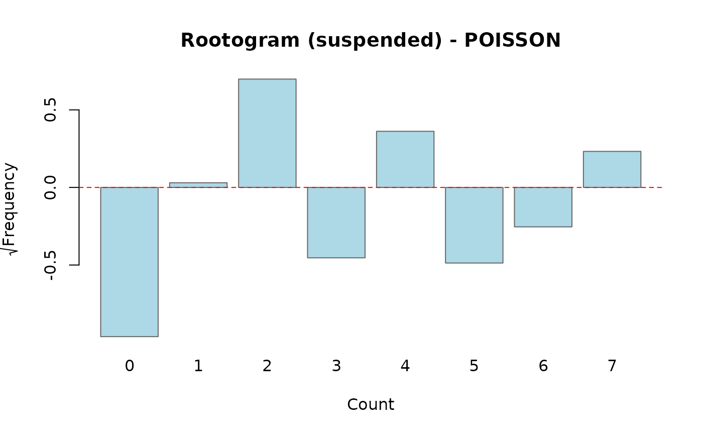

Compares observed and fitted count frequencies using a rootogram (Kleiber & Zeileis, 2016). Only available for Poisson and Negative Binomial models. Three display styles are supported:
Usage
rootogram(object, ...)
# S3 method for class 'uncounted'
rootogram(
object,
style = c("hanging", "standing", "suspended"),
max_count = NULL,
sqrt_scale = TRUE,
...
)Arguments
- object
An object of class
"uncounted"fitted withmethod = "poisson"ormethod = "nb".- ...
Additional arguments passed to
barplot.- style
Character:
"hanging"(default),"standing", or"suspended".- max_count
Maximum count value to display. If
NULL(default), automatically determined from the data (capped at 100).- sqrt_scale
Logical; use the square-root scale for frequencies (default
TRUE).
Value
Invisibly, a list with components observed (observed
frequencies), expected (expected frequencies from the fitted model),
counts (count values), style, and sqrt_scale.
Details
- hanging (default)
Bars representing the observed frequencies are "hung" from the fitted curve. The bottom of each bar should touch the zero line when the fit is good. Deviations below zero indicate underfitting; above zero, overfitting at that count.
- standing
Observed bars stand on the x-axis and the fitted curve is overlaid. Harder to judge discrepancies than the hanging style because the eye must compare bar height to the curve.
- suspended
Plots the difference \(\sqrt{f_{\mathrm{obs}}} - \sqrt{f_{\mathrm{exp}}}\) directly. Bars that cross zero indicate counts where the model over- or under-predicts.
By default the y-axis is on the square-root scale (sqrt_scale = TRUE),
which stabilises the visual variability of the bars and makes it easier to
judge fit in the tails.
References
Kleiber, C. and Zeileis, A. (2016). Visualizing Count Data Regressions Using Rootograms. The American Statistician, 70(3), 296–303.
Examples
set.seed(123)
df <- data.frame(
N = rep(1000, 50),
n = rpois(50, lambda = 50)
)
df$m <- rpois(50, lambda = df$N^0.5 * (df$n / df$N)^0.8)
fit <- estimate_hidden_pop(data = df, observed = ~m, auxiliary = ~n,
reference_pop = ~N, method = "poisson")
# Hanging rootogram (default)
rootogram(fit)

# Standing rootogram
rootogram(fit, style = "standing")

# Suspended rootogram
rootogram(fit, style = "suspended")
